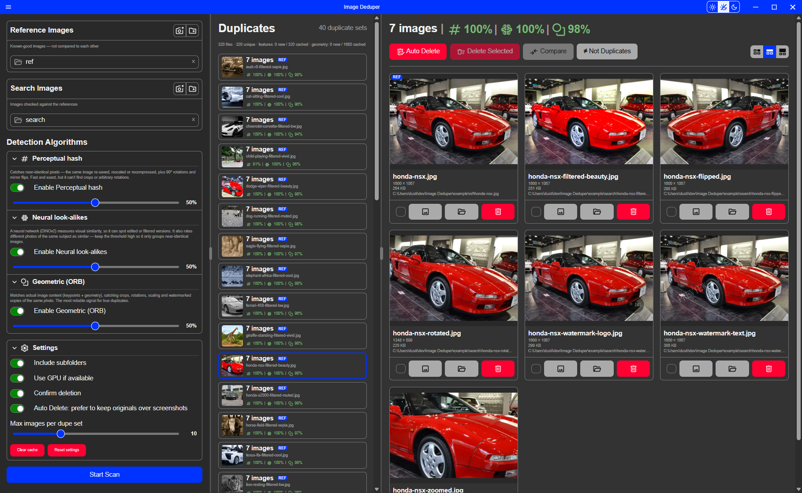

Image Deduper
Finds duplicate photos in your collection — even the sneaky ones that have been cropped, rotated, resized, re-filtered, or watermarked.
This app contains an AI neural network (DINOv2, via ONNX Runtime) for duplicate image detection.
Pros:
- The app runs 100% offline.
- No data is ever sent to any server.
- 100% privacy garenteed.
Cons:
- Very large app size — 1.5GB
- Large system requirements
- GPU Recommended, it can run on only CPU but is very slow.
- Requires up to 4GB of free RAM just for this app.

How it works
Image Deduper checks every photo against the others in three passes, each one smarter (and more expensive) than the last:
| Pass | Algorithm name | What it's good at |
|---|---|---|
| 1. Quick fingerprint | Perceptual hash | Near-instant. Catches exact copies, re-saves, resizes, and simple 90° rotations or mirror flips. |
| 2. AI visual match | Neural look-alikes | The built-in neural network recognizes the same photo even after a crop, an arbitrary rotation, a filter, or a watermark. |
| 3. Pixel-level confirmation | Geometric (ORB) | For anything borderline from pass 2, lines up the actual pixels to confirm it's a real match before flagging it. |
Each pass has its own confidence slider in the Detection Algorithms panel on the left, all on the same scale: 0% means confidently different, 100% means confidently the same photo, and 50% — the default for all three — is the actual tipping point where that pass is genuinely on the fence. A pair of photos counts as duplicates if any enabled pass clears its threshold.
Reference folders vs. Search folders
You point Image Deduper at two kinds of folders:
- Reference — your "known good" photos, the ones you already trust and want to keep. These are never compared against each other, only used as the yardstick for everything else.
- Search — the photos you actually want checked. Got no reference folders at all? Search photos just get compared against each other instead — the simple "find the dupes in this folder" case.
Keeping references out of the comparison means two of your trusted photos can never get incorrectly lumped together as duplicates of each other.
Re-scans are fast
Image Deduper remembers every photo it's already looked at, so you don't pay the cost of a full scan every time. Add a handful of new photos to a folder you've scanned before, and only those new photos get analyzed — everything else is pulled straight from memory.
Renaming or moving a file you've already scanned doesn't trigger a re-scan either — Image Deduper recognizes it's the same photo by its actual content, not its filename or location. Mark a pair as Not Duplicates and it'll stay that way on future scans too. If you ever want a clean slate, there's a Clear cache button for that.
Auto Delete
Found a set of duplicates and just want the best one kept? Auto Delete picks a winner for you — the highest-resolution copy, with ties broken in favor of less-compressed formats, then smaller file size — and asks you to confirm before deleting the rest.
Screenshots are skipped over by default when picking the winner, even if a screenshot happens to be the highest-resolution file in the set. A screenshot's resolution usually just reflects your screen size, not actual photo quality, so it's rarely the copy you actually want to keep. You can turn this off in Settings.